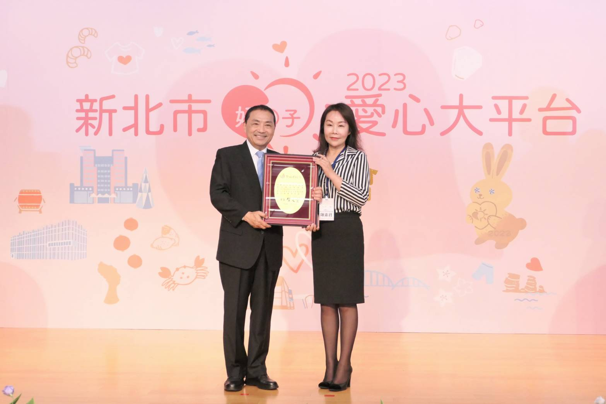

- 捐贈教育局溫馨助學圓夢基金 (100萬元)
- 贊助桃園大園國中棒球隊訓練補助
- 購贈《張忠謀自傳全集》予五股國中師生
- 頒發各級學校畢業生學業進步獎助學金
VIDEO GALLERY
影片欣賞區
聽聽受獎學生的真實心聲 — 那些在困境中依然閃耀的靈魂，是我們前進的最大動力。
FOUNDATION PURPOSE
核心使命與願景
本會之設立旨在推廣 全人教育，並致力於深耕五股、泰山、蘆洲地區之教育公益。我們相信教育是社會流動的最佳途徑。
透過各種途徑 推廣無毒世界，提供清寒學子急難救助金及獎學金，讓他們在健康的環境中茁壯。

HELP DIRECTIONS
幫助的方向
1. 設立各級學校學業進步獎助學金
針對五股、泰山、蘆洲地區之國中小學，設立學業進步獎項，鼓勵孩子不畏艱難、努力向上，肯定其學習態度的轉變。
2. 辦理房地產專業訓練與教育講座
提升房地產從業人員專業素質，與學術機構合作舉辦課程，建立透明、誠信且專業的房地產市場環境。
3. 推動校園與社區「無毒世界」宣導
與公益組織合作，深入校園舉辦防毒、反毒講座，透過生命教育讓孩子建立正確價值觀，守護純淨成長空間。
4. 提供清寒學子急難救助與生活補助
當家庭遭遇重大變故時，及時提供經濟支持與關懷，確保孩子的受教權不因突發狀況而中斷。
5. 贊助體育、藝術等全人發展計畫
支持學校社團、球隊及藝術團隊，提供發展所需之設備與經費，協助孩子發掘多元潛能。
6. 協助推廣各項教育政令與公益事務
配合政府教育政策，宣導終身學習、數位教育等方針，縮短城際教育資源落差。
7. 其他符合本會宗旨之公益服務活動
因應在地需求，不定期發起淨灘、愛心物資發放、老人關懷等多元化的社會福利服務。
ORGANIZATION STRUCTURE
組織架構
專業穩健的領導團隊，引領基金會邁向永續發展
董事長
陳素君
副董事長
李政哲
執行長
隋安德
秘書長
王郁蓓
全體董事成員
吳玉珍
李家儂
王鴻傑
黃威鳴
林儀貞
幫助的軌跡
每一年的努力，都是為了累積更多的希望。點擊年份，看見我們如何一步步改變在地教育的樣貌。
2025
YEAR REVIEW
2024
YEAR REVIEW
- 捐贈教育局溫馨助學圓夢基金 (100萬元)
- 贊助二橋國小棒球隊發展經費
- 五股、泰山、蘆洲區中小學畢業班進步獎勵
- 舉辦文化大學學生論文獎與學術論壇
2023
YEAR REVIEW
- 頒發鷺江國中會考優異第一志願獎學金
- 文化大學經濟不利學生安心就學補助計畫
- 贊助德音國小女壘隊活動經費
- 五股國中與成州國小校慶活動贊助